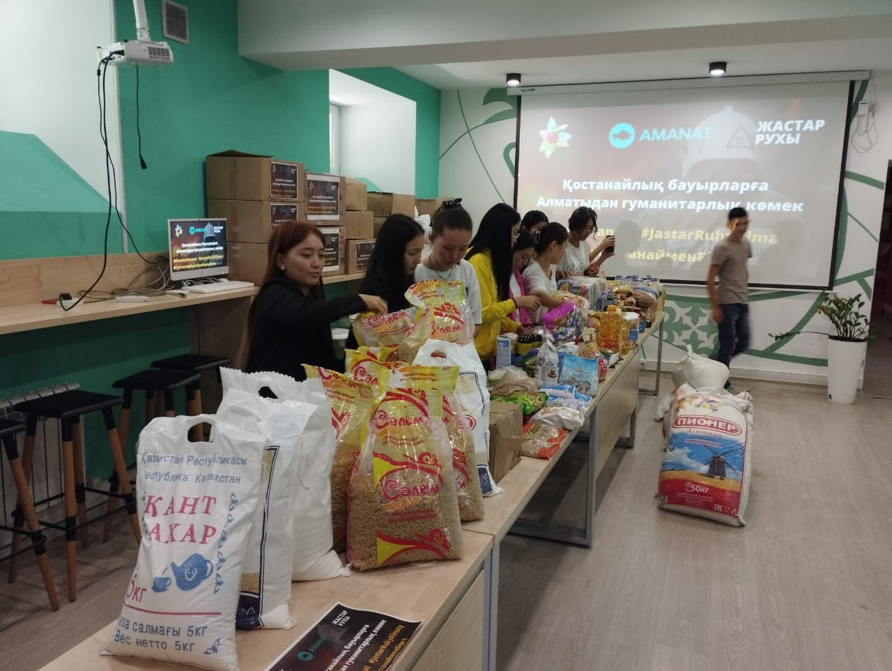
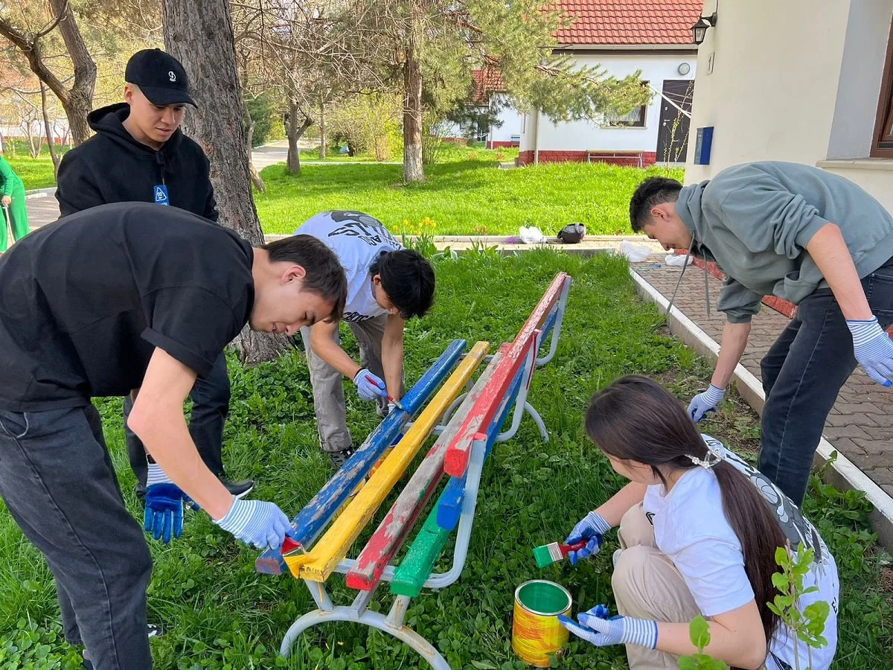

📸 Біздің еріктілер іс-әрекетте



Сіздің уақытыңыз және мейіріміңіз бір адамның өмірін өзгерте алады. Біздің командаға қосылыңыз!
Азық-түлік пен киім-кешектерді мұқтаж жандарға жеткізуге көмектесу.
Әлеуметтік желілерді жүргізу, сайтты толтыру және дизайнерлік көмек.
Балаларға үй тапсырмасына көмектесу және арнайы сабақтар өткізу.
"Менің еңбек демалысым тек қана демалыс емес, мағыналы әрекеттерге толы болды. Мен алған тәжірибе баға жетпес!"
"Волонтерлік маған жаңа достар табуға және қоғамға пайдалы екенімді сезінуге көмектесті. Барлығына кеңес беремін!"
Біз 16 жастан асқан азаматтарды қабылдаймыз. 18 жасқа толмағандар үшін ата-анасының немесе заңды өкілінің жазбаша келісімі қажет.
Уақытты өзіңіз таңдайсыз. Әдетте, еріктілер аптасына кемінде 3-4 сағат бөледі. Біз сіздің кестеңізге икемделуге тырысамыз.
Әр жаңа ерікті үшін біз 1 сағаттық қысқаша нұсқаулық тренинг өткіземіз. Бұл міндетті және тегін.
Қазір тіркеліп, өз мейіріміңізді таратуды бастаңыз.
✅ Волонтер болып тіркелу